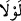
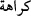
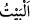
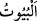
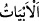
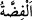
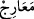
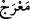
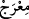
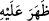
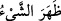

bulunmasaydı, Rahmân’ı inkâr edenlerin evlerinin tavanlarını ve çıkacakları
merdivenleri gümüşten yapardık.
“Şâyet insanların” kâfirlere imrenip “küfürde birleşmiş bir tek ümmet olması
(tehlikesi)” endişesi “bulunmasaydı, Rahmân’ı inkâr edenlerin” yani yaratıkların en
kötüsü ve en bayağısı olanların “evlerinin tavanlarını ve çıkacakları merdivenleri”
bize göre dünya basit ve değersiz olduğu için “gümüşten yapardık.”
Âyet-i kerimenin başında “__WORD__/levlâ” kelimesinden sonra bir “__WORD__/kerâhete” şeklinde
bir muzaf takdir edilmektedir. “İnsanların küfürde birleşme endişesi olmasa” demektir.
Zîrâ “levlâ” kelimesi, birinci hükmün bulunması sebebiyle ikinci hükmün olmaması
içindir. Bu bakımdan zâhirde “levlâ”nın delâlet ettiği husus gerçekleşmemektedir.
Mânâ, “Şâyet insanların küfre rağbet edip imrenmeleri endişesi olmasaydı…” şeklinde
olur. Çünkü insanlar dünyayı çok sevdiklerinden kâfirleri bolluk ve nimet içinde
görünce, sanki kâfirlerde bir fazîlet ve üstünlük olduğu vehmine kapılır, toplanıp
küfürde tek ümmet oluverirler.
Kâfirler, yaratıkların en kötüsü ve en bayağısıdır. Çünkü âyet-i kerîmede kâfirler
hakkında “onlar mahlukâtın en şerlisidir” (el-Beyyine, 98/6) buyrulmaktadır.
“__WORD__/beyt” kelimesi gecelemek için tavanlı olarak yapılan ve tek bir giriş kapısı olan
yapının ismidir. Çoğulu, “__WORD__/büyût” ve “__WORD__/ebyât” olarak gelir.
Râgıb şöyle demiştir: “Beyt”in aslı, insanın gece sığınağı ve barınağıdır. Sonra
geceyi dikkate almaksızın da meskenlere “beyt” denmiştir. Beytin çoğulunda “büyût”
meskene, “ebyât” ise şiire mahsustur. Taştan, kerpiçten, yünden ve deve tüyünden
yapılanlara da “beyt” denir. Şiirin iki mısraından oluşan bölüme “beyt” denmesi ise,
onun ev mânâsındaki beyte teşbîh edilmesindendir.
“__WORD__/sükuf”, “__WORD__/sakfen” kelimesinin çoğuludur. Evin tavanı demektir. “__WORD__/fıdda”
gümüş; eriyen, girift beyaz, diğer cisimlere göre daha bir ağır ve yoğun olan bir
madendir. Gümüşe, ihtiyaç yerlerine harcanıp dağıldığı için “fıdda” denilmiştir. ”__WORD__/meâric” kelimesi “__WORD__/marec” yahut “__WORD__/mirac” kelimesinin çoğulu olup
“merdivenler” mânâsındadır.
Râgıb şöyle demiştir: “Urûc” yükseliş demektir. “Meâric” merdiven ve asansör
demektir. Mânâ şöyledir: Biz onlara gümüşten merdivenler, basamaklar ve asansörler
yapardık. Birinci kelime buna delâlet ettiği için ikincisi hazfedilmiştir.
Kişi bir şeyin üzerine çıkıp yükseldiği zaman “__WORD__/zahara aleyhi” denir. “__WORD__/zahara’ş-şey’ü” ifâdesinin aslı yerin üstünde bir şeyin zâhir olması ve gizli
kalmamasıdır. Sonra “basar (göz)” ve basîrete bâriz ve zâhir olan her şey için
kullanılmıştır. Mânâ, “damlara ve yükseklere çıkarlardı” demektir. Öyle merdivenler ki
onlar sâyesinde evlerinin damlarına çıkar, kendilerini gösterirlerdi.